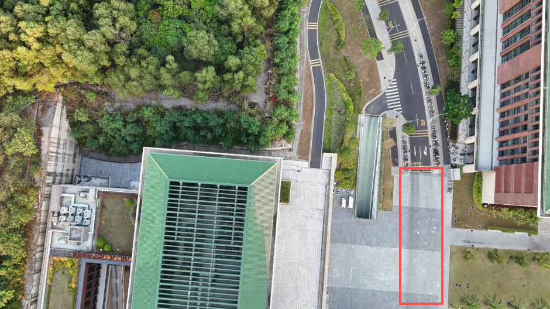

3DGS Reconstruction Effect
The left image is a frame from the original UAV video. The right image is rendered from the 3D Gaussian Splatting model. Dynamic objects (e.g. vehicles and pedestrians) are removed during reconstruction, demonstrating that the scene is reconstructed in 3D rather than replayed.
Original Video

3DGS Rendered View
Explore the 3D Reconstruction
You can freely rotate, zoom, and explore the 3D reconstructed scene below.
Overview
This project demonstrates high-quality novel view rendering results generated using 3D Gaussian Splatting (3DGS). The scene is reconstructed from real images and rendered from unseen viewpoints.
Method
- Structure-from-Motion with COLMAP
- 3D Gaussian representation
- Differentiable rasterization
- Real-time novel view rendering